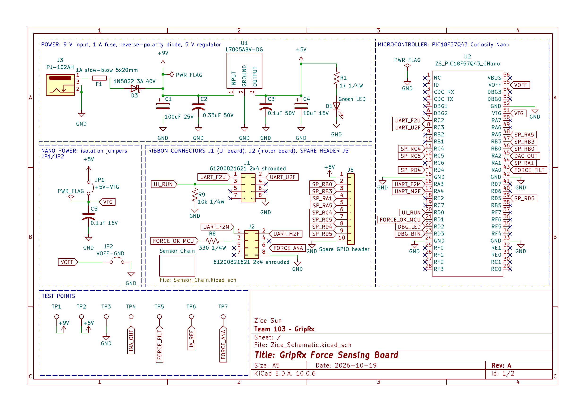
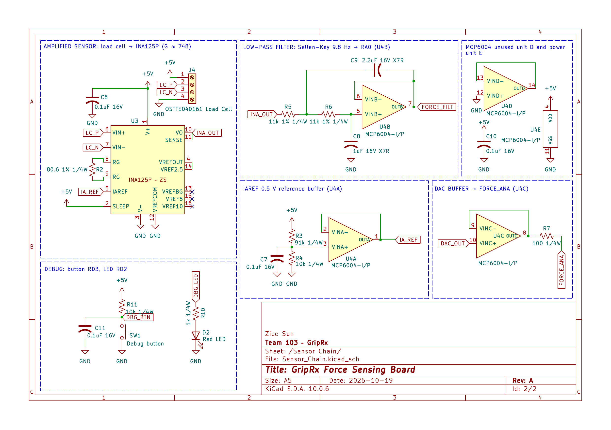

Schematic
Overview
This schematic shows the GripRx force sensing board. Sheet 1 contains the 9 V input with a 1 A fast-acting fuse, a 1N5822 reverse-polarity diode and the L7805 5 V regulator, the PIC18F57Q43 Curiosity Nano with isolation jumpers, the ribbon connectors to the UI board (J1) and motor board (J2), a spare GPIO header and test points. Sheet 2 contains the load cell signal chain: an INA125P instrumentation amplifier with a gain of 604 (R2 = 100 Ω) that uses its own internal 1.24 V reference, a passive RC low-pass filter (R5 = 15 kΩ, C8 = 1 µF, cutoff about 10.6 Hz) into ADC pin RA0, and the debug button and LED. The analog copy of the force for the motor board (FORCE_ANA) comes straight from DAC1 on RA2.
Revision (10/26): following instructor feedback, the MCP6004 op amp was removed. The INA125P reference buffer and the DAC output buffer are gone, and the second-order Sallen-Key filter was replaced by the single RC filter above. This keeps one amplifier IC in the signal chain.
Note: GitHub is currently having issues displaying images. If the schematic images below do not display, please download the schematic PDF. The schematic PDF is also submitted directly to Canvas.

Figure 1. Sheet 1: power, microcontroller, connectors and test points.

Figure 2. Sheet 2: load cell signal chain and debug.
How the Circuit Meets the User Needs
Accurate force for the therapist's prescription (SW-06, MF-03). The load cell gives about 0.1 mV per kgf at 5 V excitation. The INA125P amplifies the bridge difference by G = 4 + 60 kΩ / R2 = 604 and rejects the 2.5 V common-mode voltage. Its reference pins are wired so that VREFOUT is the internal 1.24 V bandgap (VREFOUT tied to VREFBG), and that voltage drives the IAREF pin. Zero force therefore reads 1.24 V instead of sitting at the bottom rail, and 40 kgf reads about 1.24 V + 604 × 4 mV ≈ 3.7 V, inside the amplifier's output swing on a 5 V supply. With the 12-bit ADC, 0.1 kgf is about 5 counts, which meets the 0.1 kgf resolution goal. Calibration uses known weights; test point TP4 (INA_OUT), TP5 (FORCE_FILT) and TP6 (IA_REF) let each stage be measured.
A steady reading at the speed of a grip (UX-02). A grip changes at only a few hertz. The RC filter (cutoff about 10.6 Hz) passes that, reduces 60 Hz mains pickup by about 15 dB, and its 1 µF capacitor holds the ADC input steady while the converter samples. Averaging in firmware over one mains period removes the rest, and the reading still updates far faster than the 5 Hz display requirement.
Safety when the force is too high or a cable comes loose (SF-01). The force board drives FORCE_OK (RD1, through R8) to the motor board, which has a pull-down on that line, so the motor releases if the force board says so or if the cable is unplugged. UI_RUN from the UI board has a 10 kΩ pull-down (R9) here, so an unplugged UI cable reads as "stop".
Safe, simple power (MF-01). A 1 A fast-acting fuse limits a short, the 1N5822 blocks a reversed adapter, and the L7805 with its datasheet capacitors makes the single 5 V rail. Jumpers JP1 and JP2 separate the board supply from the Curiosity Nano's USB power, so the board can also be tested from USB alone.
Resources
Use of Generative AI
I used Claude (Anthropic) for this assignment. Claude produced a reference schematic drawing and parts list, fixed the U4A input polarity, a label typo and six missing connections. I did the rest of the wiring, the layout and the section labels myself. Full queries:
-
"I am doing EGR 304 individual assignment schematics, give me the full overview and what to do [assignment link]."
-
"What parts do I need to draw? How do I draw them?"
-
"Should I use Earth or GND?"
-
"Generate a sample look of the schematics."
-
"How to draw dashed blocks?"
-
"Check my previous projects: are there any other circuits/parts I can reuse?"
-
"About the PIC Design (and other circuits) you said I could copy and reuse, which part exactly and how do I reuse?"
-
"What do I need to submit?"
-
"ERC is good, check my schematics before turning in."
-
"How do I export PNG?"
-
"What do I do again when images don't display? [schematic page link]"
-
"My instructor said: use a normal fuse, not slow-blow; the INA125P is an op amp, so use only one; an RC filter is enough for the low-pass filter; and the DAC buffer and reference buffer are not needed. Is he right? Should I take all of it?"
-
"Following the instructor's advice, I deleted the reference buffer and the buffer from my schematic and changed the low-pass filter to a simple RC filter. Check for whatever is missing in the drawing."